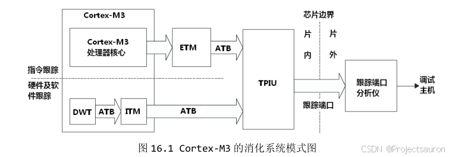
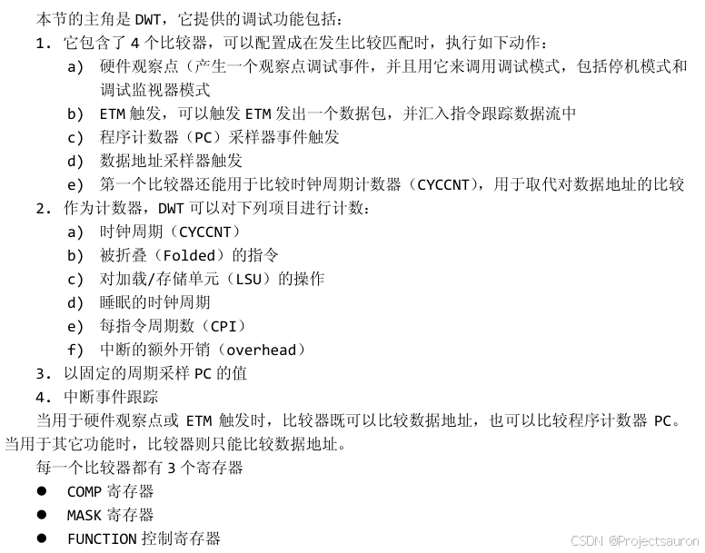
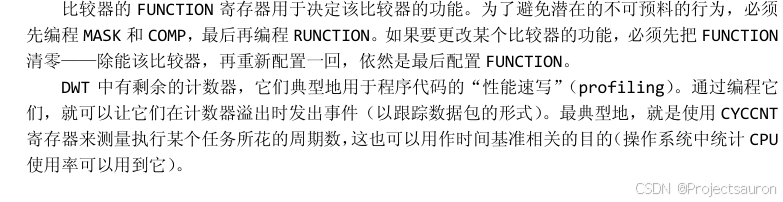
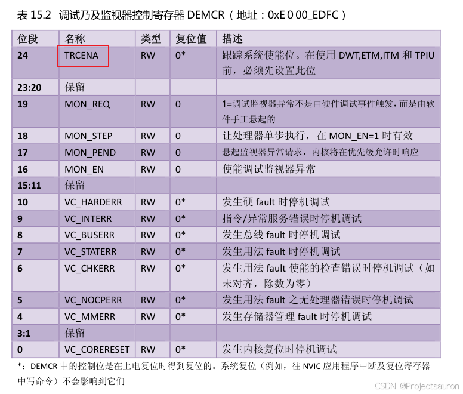
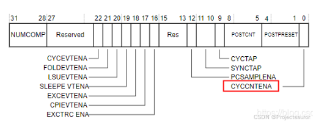
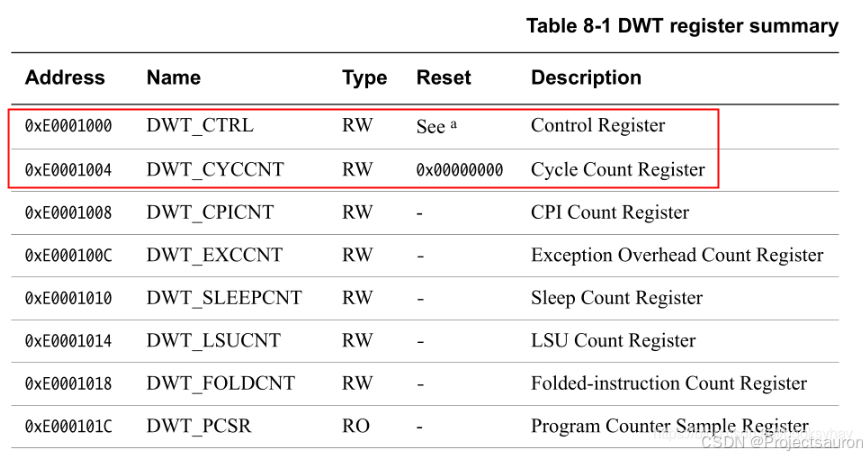
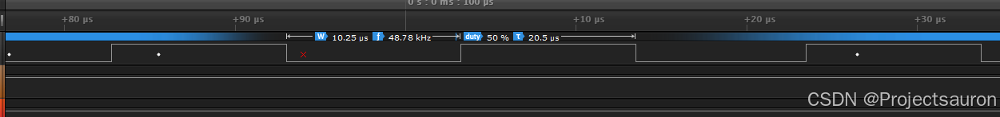
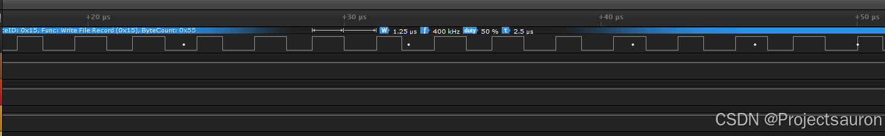

[toc]
零、前言
在 FreeRTOS 中，SysTick 被用于作为调度器的一部分进行任务调度，那么如果我需要使用软件模拟通信，例如软件 I2C，需要使用 delay，就无法使用 SysTick 实现的 delay。
因此，这里提供一种基于 DWT 实现的 delay。
一、DWT
在实现我们的代码之前，如果你没有了解过 DWT，那就先来看一下：
这里只介绍待会儿会用到的延时相关的内容



在 Cortex-M 内核内核中里面有一个外设叫 DWT(Data Watchpoint and Trace)，是用于系统调试及跟踪。
它有一个 32 位的寄存器叫 CYCCNT，它是一个==向上==的计数器，记录的是内核时钟运行的个数，内核时钟跳动一次，该计数器就加 1。
它的精度非常高，取决于内核的频率是多少，如果是 F103 系列，内核时钟是 72M，那精度就是 $1/72M = 14ns$，而程序的运行时间都是微秒级别的，所以 14ns 的精度是远远够的。最长能记录的时间为：$60s = 2^{32}/72000000$ (假设内核频率为72M，内核跳一次的时间大概为 $1/72M=14ns$)，而如果是 H7 这种 400M 主频的芯片，那它的计时精度高达 2.5ns（$1/400000000 = 2.5$）。
当 CYCCNT 溢出之后，会清 0 重新开始向上计数。
要实现延时的功能，总共涉及到三个寄存器：DEMCR、DWT_CTRL、DWT_CYCCNT，分别用于开启 DWT 功能、开启 CYCCNT 及获得系统时钟计数值。下面就来看一下这几个寄存器吧。
1、DEMCR
参照权威指南：

配置的时候，将 TRCENA 设置为 1 就行了。
2、DWT_CTRL

将 CYCCNTENA 使能位置 1 即可。
3、DWT_CYCCNT

使用 DWT_CYCCNT 寄存器之前，先清 0。
综上所述，要使用 DWT 的 CYCCNT 配置步骤如下：
- 使能 DWT 外设，这个由内核调试寄存器 DEMCR 的位 24
TRCENA 控制，写 1 使能
- 使能
CYCCNT 寄存器之前，先清 0。
- 使能
CYCCNT 寄存器，这个由 DWT 控制寄存器的 CYCCNTENA 位控制，也就是 DWT 控制寄存器的位 0 控制，写 1 使能
二、实现代码
1
2
3
4
5
6
7
8
9
10
11
12
13
14
15
16
17
18
19
20
21
22
23
24
25
26
27
28
29
30
31
32
33
34
35
36
37
38
39
40
41
42
43
44
45
46
47
48
49
50
51
52
53
54
55
56
57
58
59
60
61
62
63
64
65
66
67
68
69
70
71
72
73
74
75
| #define DWT_CYCCNT *(volatile unsigned int *)0xE0001004
#define DWT_CR *(volatile unsigned int *)0xE0001000
#define DEM_CR *(volatile unsigned int *)0xE000EDFC
#define DEM_CR_TRCENA (1 << 24)
#define DWT_CR_CYCCNTENA (1 << 0)
void bsp_dwt_init(void)
{
DEM_CR |= (unsigned int)DEM_CR_TRCENA;
DWT_CYCCNT = (unsigned int)0u;
DWT_CR |= (unsigned int)DWT_CR_CYCCNTENA;
}
void bsp_dwt_delay(uint32_t _delay_time)
{
uint32_t cnt, delay_cnt;
uint32_t start;
cnt = 0;
delay_cnt = _delay_time;
start = DWT_CYCCNT;
while(cnt < delay_cnt)
{
cnt = DWT_CYCCNT - start;
}
}
void bsp_delay_us(uint32_t _delay_time)
{
uint32_t cnt, delay_cnt;
uint32_t start;
start = DWT_CYCCNT;
cnt = 0;
delay_cnt = _delay_time * (SystemCoreClock / 1000000);
while(cnt < delay_cnt)
{
cnt = DWT_CYCCNT - start;
}
}
void bsp_delay_ms(uint32_t _delay_time)
{
bsp_delay_us(1000 * _delay_time);
}
|
三、测试
下面通过一个简单的 demo 测试一下 us 级的延时函数，通过翻转 PC0 的电平状态，再通过逻辑分析仪查看延时效果：
1
2
3
4
5
6
7
8
9
10
11
12
13
14
15
16
17
18
19
20
21
22
23
24
25
26
27
28
29
30
31
32
33
| int main(void)
{
bsp_dwt_init();
{
GPIO_InitTypeDef GPIO_InitStructure;
RCC_AHB1PeriphClockCmd(RCC_AHB1Periph_GPIOC, ENABLE);
GPIO_InitStructure.GPIO_OType = GPIO_OType_PP;
GPIO_InitStructure.GPIO_PuPd = GPIO_PuPd_UP;
GPIO_InitStructure.GPIO_Mode = GPIO_Mode_OUT;
GPIO_InitStructure.GPIO_Pin = GPIO_Pin_0;
GPIO_InitStructure.GPIO_Speed = GPIO_Speed_50MHz;
GPIO_Init(GPIOC, &GPIO_InitStructure);
}
while (1)
{
GPIOC->BSRR = (uint32_t)GPIO_Pin_0;
bsp_delay_us(1);
GPIOC->BSRR = (uint32_t)GPIO_Pin_0 << 16;
bsp_delay_us(1);
}
return 0;
}
|
bsp_delay_us(10)：

大致要比实际设置的时间多运行 0.25 us
bsp_delay_us(1)：

注意事项
在烧录运行程序的时候，由于下载器的问题，早期用的 D 版 JLINK，不能正常复位 DWT。所以 DWT 时钟计数器容易出现不运行的情况，而调试状态或者重新上电都不存在问题，使用的时候要注意。